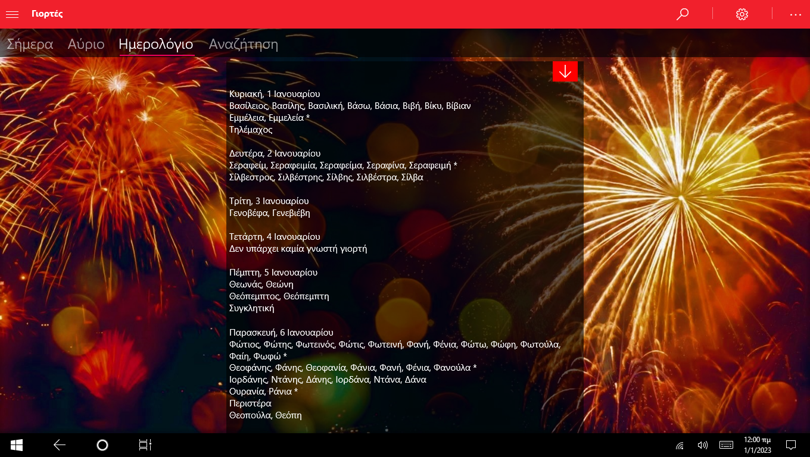
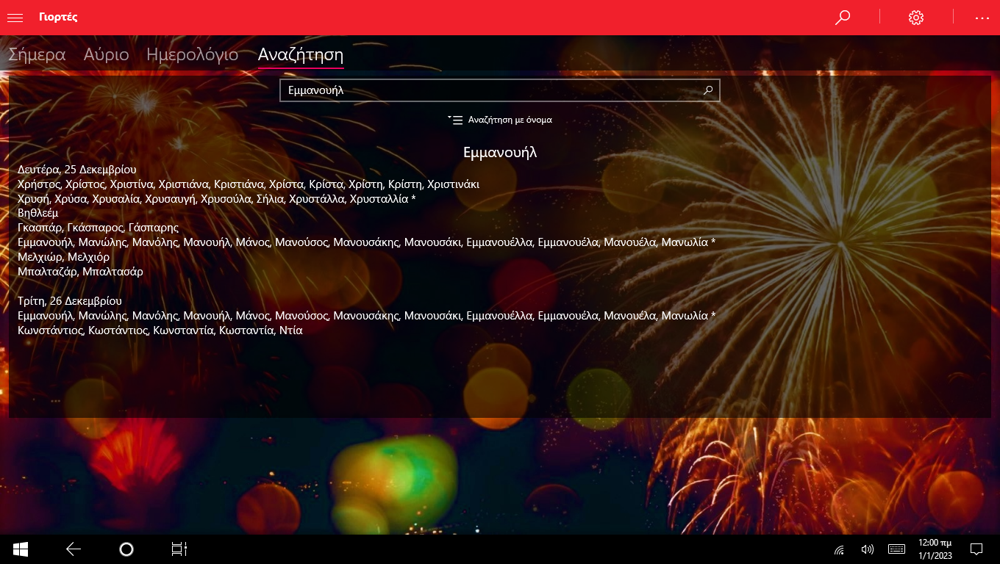
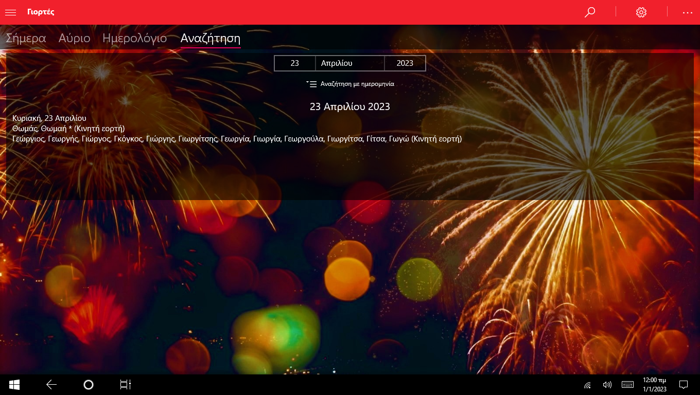

Γιορτές
Ημερολόγιο γιορτών και εορτολογίων για Windows & Android.
Screenshots





Περιγραφή
Η εφαρμογή Γιορτές σου επιτρέπει να γνωρίζεις πάντα ποιοι γιορτάζουν, εύκολα και γρήγορα. Λειτουργεί πλήρως χωρίς σύνδεση στο Internet και παρέχει καθημερινές ειδοποιήσεις με τις γιορτές της ημέρας.
Περιλαμβάνει πλήρες εορτολόγιο για όλο τον χρόνο, ημερολόγιο με όλες τις γιορτές, καθώς και αναζήτηση με βάση το όνομα ή την ημερομηνία, ώστε να βρίσκεις άμεσα αυτό που ψάχνεις.
Χαρακτηριστικά
- Λειτουργία χωρίς σύνδεση στο Internet – Όλα τα δεδομένα είναι διαθέσιμα offline.
- Καθημερινές ειδοποιήσεις – Μαθαίνεις ποιος γιορτάζει κάθε μέρα.
- Widgets αρχικής οθόνης (Android) – Δες τις γιορτές της ημέρας κατευθείαν στην αρχική.
- Σταθερές & κινητές εορτές – Αυτόματος υπολογισμός κινητών εορτών κάθε έτος.
- Πλήρες εορτολόγιο – Όλες οι γιορτές για κάθε ημέρα του χρόνου.
- Ημερολόγιο γιορτών – Προβολή γιορτών ανά μήνα και ημέρα.
- Αναζήτηση γιορτών – Βρες γιορτές με όνομα ή ημερομηνία.
- Προσαρμογή εμφάνισης (Android) – Διάλεξε τα χρώματα που σου ταιριάζουν.
- Προσωπικό background (Android) – Βάλε τη δική σου εικόνα φόντου.
- Απλή και φιλική χρήση – Καθαρό περιβάλλον για γρήγορη πλοήγηση.
- Διαθέσιμη σε Windows & Android